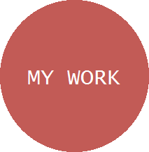
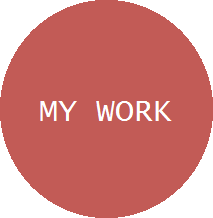
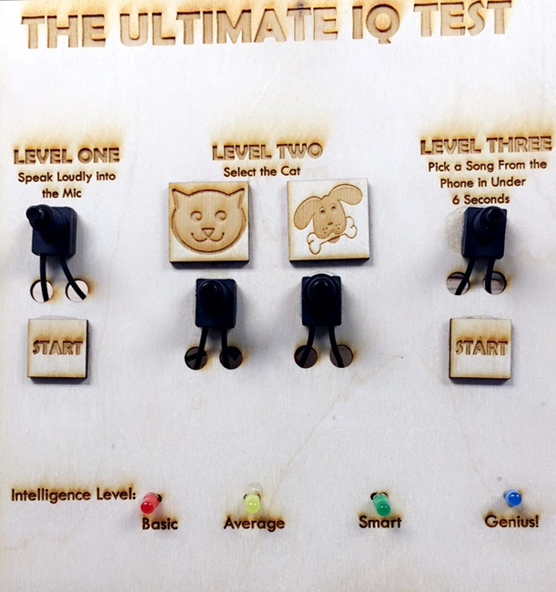

ISABELLA WATSON
 

IQ Test Project
“The Ultimate IQ Test” project is a mock IQ game I designed to demonstrate a working knowledge of electronics and circuit design. The goal of the game is to "win" by following the prompts on the wooden interface pictured below. There are three levels of "difficulty", each corresponding to an intelligence level.
This page contains a general overview of the project. For those interested in the detailed circuitry and technical mechanics of the project, I have provided a comprehensive project report (PDF file) for download below.
Project Overview
"Level One" is a voice activated LED circuit. To play, the user must first push the "Start" button—as seen on the interface—which activates the circuit. If the user supplies ample audio input to the microphone, the yellow LED will illuminate, indicating an "Average" intelligence score. The user can earn a higher score after completing higher levels. For operation, "Level One" relies on RC filtering, operational amplifiers, and voltage dividers.
The following link leads to a youtube video which depicts the voice-driven circuit before the LED was mounted to the interface:
Level Two
In "Level Two", two buttons activate their respective circuits. The player's goal is to select the cat to win. One switch (cat button) will illuminate a green LED, indicating a "Smart" intelligence score. The other (dog button) will illuminate a red LED, indicating a "Basic" intelligence score. This circuit primarily relies on switching and voltage division for operation.
The following links lead to youtube videos depicting "Level Two" operation:
Level Two Loser Video Demonstration
Level Three
To begin "Level Three", the user must first push the "Start" button. The player's goal is to pick and play a song from the iPhone in under 6 seconds. If the user selects a song in the allotted time a blue LED will illuminate indicating a "Genius!" intelligence rating, and the song will play over an 8Ω speaker. If the iPhone circuit has received no audio input after 6 seconds, an alternate timer circuit is activated; an unpleasant buzzer will sound and the red LED above "basic" will illuminate, indicating the user has lost. This circuit is mainly comprised of a 555 Timer, speaker/amplifier system, peak detector, and various RC filters.
The following links lead to youtube videos depicting "Level Three" operation:
***the above video depicts the music activated LED circuit before it was mounted to the interface.
Level Three Loser Demonstration